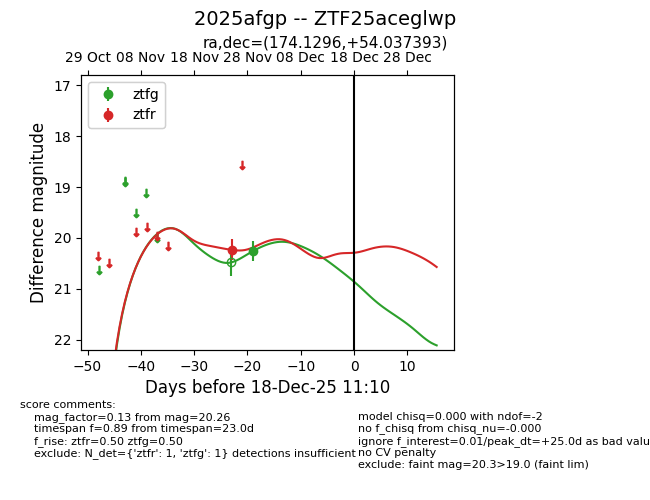
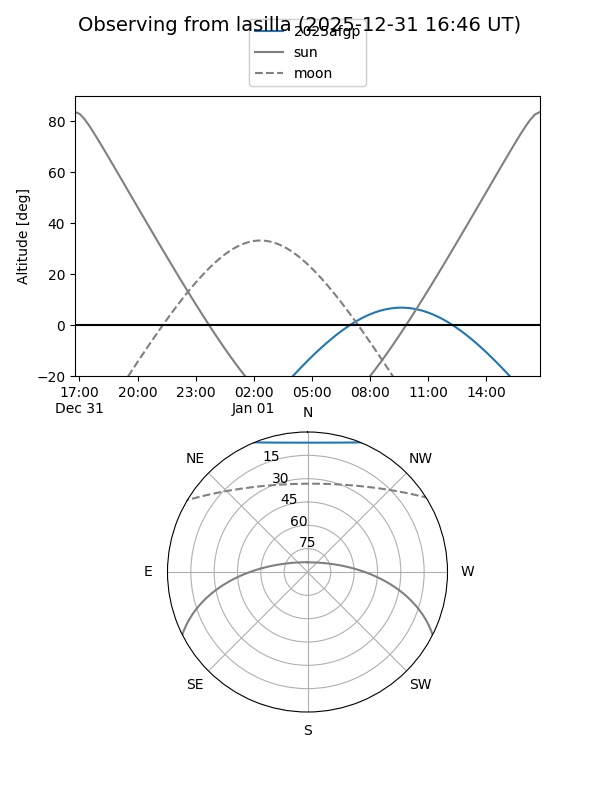
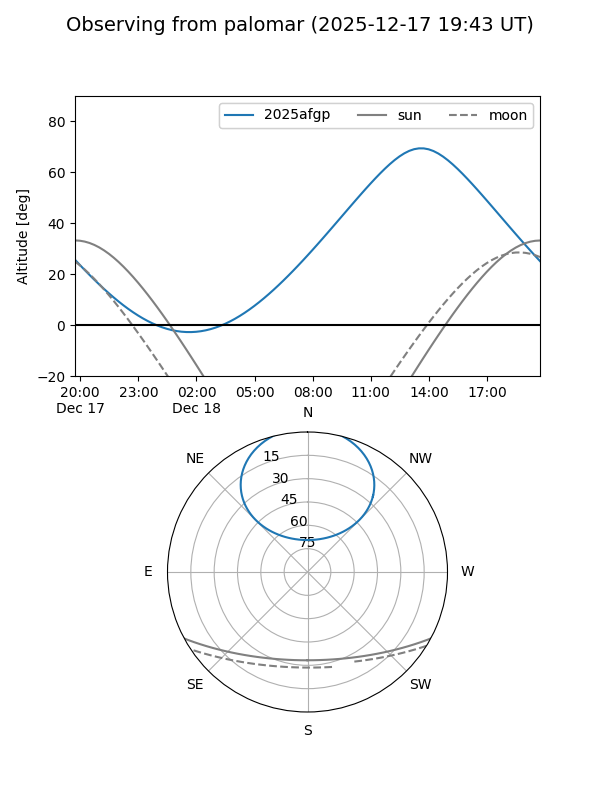
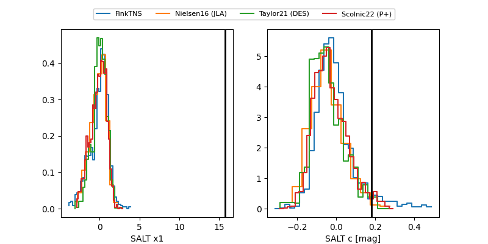

2025afgp
Target 2025afgp at 2025-12-31 16:59
Aliases and brokers:
FINK:
Lasair:
ALeRCE:
TNS:
YSE:
alt names
ZTF25aceglwp (ztf,fink_ztf)
2025afgp (tns,yse)
Coordinates:
equatorial (ra, dec) = 174.1296,+54.03739
equatorial (HMS+DMS) = 11:36:31.11,+54:02:14.61
galactic (l, b) = (144.9308,+59.77410)
Flags:
Photometry:
last ztfg=20.26, ztfr=20.23
1 ztfg, 1 ztfr detections
Lightcurve

Visibility


Additional plots
